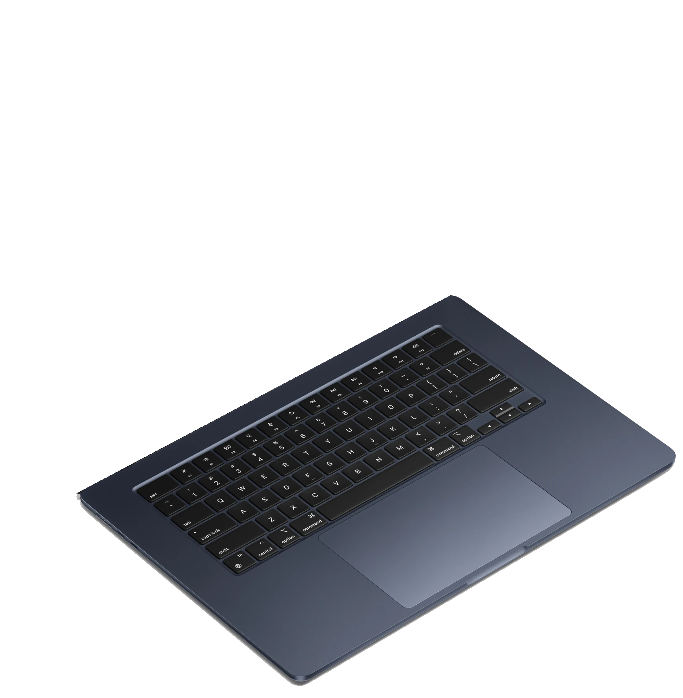
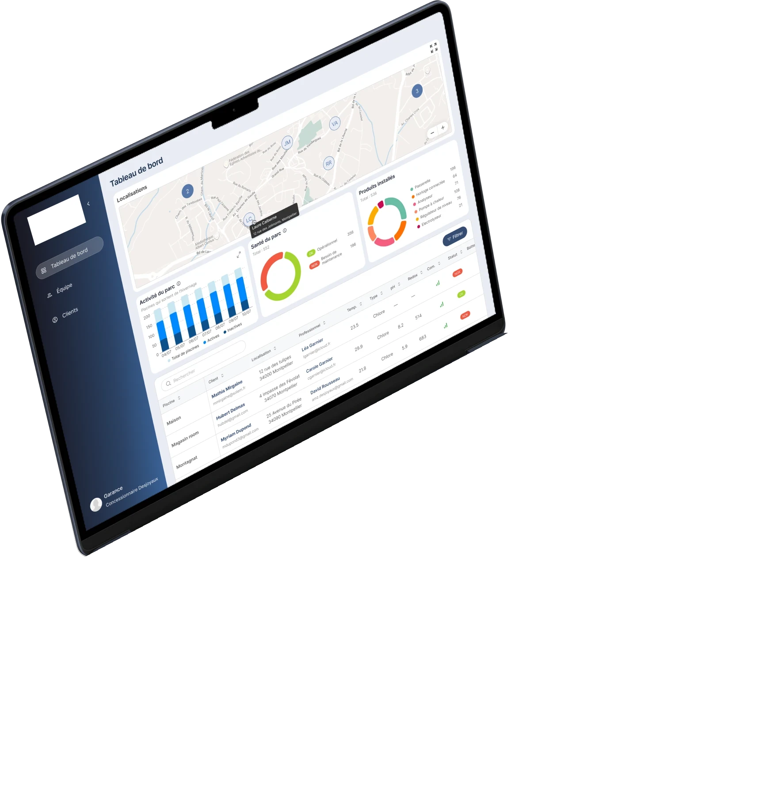

Line Cabaret
Jeune diplômée d’un BUT MMI après un DUT Informatique, j’aborde le design avec un œil à la fois créatif et technique. J’ai déjà conçu des maquettes et des interfaces web et mobile à travers plusieurs expériences (Figma, Webflow, Penpot). Organisée et à l’aise en équipe, je cherche à poursuivre dans le design UI/UX.


PRIMAL, MONTPELLIER · 2026
MyIndygo est une application pour les piscines connectées multimarques. Elle permet de suivre et paramétrer à distance vos équipements. Chlore, robot, pompe : tout est géré depuis votre téléphone.
Sur ce projet, j’étais la responsable design de la marque. J’ai réalisé différentes maquettes pour l’application ainsi que pour la plateforme web.
MyIndygo est une application à la fois pour les professionnels et pour les particuliers, mais son utilisation reste technique. Je me devais de pouvoir retranscrire des actions complexes (« programmation d’un équipement », « connecter un nouvel appareil ») à travers un parcours utilisateur simple, clair et facile d’utilisation, tout en restant dans la cohérence graphique de la marque.
Les données techniques de l’appareil, présentées simplement.
Mise à jour et accès à distance en un seul geste.
Il était essentiel de reprendre les composants iOS pour faciliter le déploiement au développeur. J’ai donc adapté tout mon design en respectant les contraintes iOS (espacements, navigation, composants, etc.).
Utilisation des composants iOS : barre de navigation.
J’ai également dû réaliser des maquettes pour la partie plateforme, orientée professionnels. Celle-ci permet à nos clients de consulter leurs appareils, leurs clients et l’état de leurs piscines. J’ai donc réalisé plusieurs tableaux de bord techniques regroupant tableaux, graphiques et carte interactive.
Faites défiler
Sites web, applications et même un court-métrage : découvrez les autres projets que j’ai menés en stage et en formation.
Voir tous mes projets